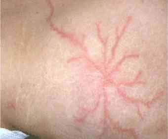

Accidents liés à la foudre
Spécialité : pathologies circonstancielles / pédiatrie /
Points importants
- Foudroiement ou fulguration = effets de la foudre (courant atmosphérique à très haute tension) sur l'organisme
- Prise en charge du type de celle des polytraumatismes
- En France, 50 à 100 personnes foudroyées, une dizaine de décès
- 70% de séquelles permanentes souvent invalidantes
- Effets physiopathologiques dus à la libération d'énergie thermique, lumineuse et sonore
-
Complications graves diminuées si prise en charge adaptée dès le préhospitalier
Présentation clinique / CIMU
SIGNES FONCTIONNELS
Généraux
- Gravité allant de patient totalement asymptomatique à l'arrêt cardiaque
-
Les patients conscients se plaignent de :
- douleur
- faiblesse
- dysesthésies
- problèmes neurologiques ou musculaires
CONTEXTE
Facteurs de risque
- 5 fois plus fréquent chez les hommes du fait de l'exposition plus importante (travail en extérieur), hauteur et isolation
Circonstances de survenue
- Patient exposé à la foudre, à un orage
EXAMEN CLINIQUE
Patient en état de mort apparente
- Le plus souvent par asystolie (intense stimulation vagale ou par dépolarisation massive du myocarde)
- Dans ce cas, reprise fréquente de l'automaticité cardiaque justifiant le prolongement des manoeuvres de réanimation
- Plus rarement par fibrillation ventriculaire
- Mais aussi par inhibition des centres respiratoires, lésions cérébrales ou médullaires, traumatiques ou électriques
Examen cardio-vasculaire
- Le plus fréquent : tachycardie et poussée hypertensive
- Tableau de dysfonction ventriculaire gauche jusqu'au choc cardiogénique, régressif en quelques jours
-
Epanchements péricardiques :
- de la simple péricardite (pouvant devenir chronique) à la tamponnade
-
Examen vasculaire :
- recherche de tous les pouls (vasospasmes fréquents transitoires, parfois thromboses vasculaires ; dissections aortiques)
Les brûlures
-
Mécanismes plus ou moins associés :
- effet thermique
- flash
- ignition des vêtements
- fonte ou projection de métaux
- inhalation de gaz chauds
- Superficielles dans 95% des cas
- Brûlures profondes (liées au passage du courant à l'intérieur du corps), difficiles à identifier
- « Figures de Lichtenberg » (30% des cas, pathognomoniques, intérêt médico-légal) petites macules rosées, fixes ne disparaissant pas à la pression, dessinant des arborescences en feuilles de fougères, disparaissent en général dans les 12h
 _612
Examen clinique minutieux et répété
- Anomalies de la peau (oedème, couleur, aspect marbré)
- Absence d'un pouls
- Troubles de sensibilité
- Aspects de tatouage provenant de la fusion des métaux (bijoux, fermeture éclair) donnent des marques noirâtres évoquant des brûlures profondes mais disparaissant, généralement, au décapage, parfois associés à des brûlures
Examen neurologique
-
Symptômes immédiats et transitoires :
- perte de connaissance de courte durée (65% à 75%)
- amnésie antérograde (46%)
- confusion (86%)
- céphalées
- agitation
- paresthésie
- asthénie
-
Lésions des nerfs crâniens (moins fréquentes) :
- troubles de l'audition (10 %)
- aphonie (6 %)
-
moins de 5% :
- parésie faciale
- anisocorie
- réflexie pupillaire
- troubles de la déglutition
-
Kerauno-paralysis (30 à 60%) :
- baisse de la force musculaire prédominant aux membres inférieurs, ± complète, avec troubles sensitifs, pâleur, vasoconstriction sévère avec diminution des pouls, hypertension artérielle, récupère en une à quelques heures
- syndrome cérébelleux rare
- Atteinte de la moelle épinière rare, plus ou moins définitive
- Cas possibles de polyneuropathies, d'atteinte des nerfs crâniens (VII VIII)
- Syndrome post-traumatique (++) avec manifestations phobiques, dépressives
Examen neurosensoriel
-
Œil :
- anomalies pupillaires fréquentes (myosis, mydriase, anisocorie, parfois non réactive)
- brûlures cornéennes, atteinte du nerf optique, uvéites, hémorragies, choriorétinites, iridocyclites, hyphéma, fractures orbitaires
-
Appareil auditif et vestibulaire :
- perforation tympanique (++ par effet blast)
Examen pulmonaire
- Le plus souvent par effet blast : contusions pulmonaires, hémorragies alvéolaires
- Traumatique lors des chutes ou projections
- Lésions bronchiques, parenchymateuses, pneumothorax par passage direct du courant
Examen abdominal
- Iléus fréquent
- Perforation digestive
- Syndrome du compartiment abdominal secondaire
- Traumatisme
Appareil locomoteur
- Le foudroyé est un traumatisé jusqu'à preuve du contraire
Examen gynécologique
- L'utérus gravide hyperhémique et le liquide amniotique sont d'excellents conducteurs
EXAMENS PARACLINIQUES SIMPLES
ECG
- Tachycardie sinusale, allongement du QT
- Troubles du rythme variés : ESA, ESV bénignes, ACFA
- Troubles de la conduction auriculo-ventriculaire et intra-ventriculaire
-
Aspects d'ischémie myocardique (10%): nécroses plus ou moins étendues par effet Joule, spasme ou thrombose coronaire (rare)
Signes paracliniques
BIOLOGIQUE
- Coagulation, gaz du sang
- CPK ou myoglobine
- Phosphorémie
- pH urinaire en cas de myoglobinurie (rhabdomyolyse)
- Troponine
IMAGERIE
Echographie cardiaque
- Altérations de la fonction systolique, atteinte péricardique
Echo pelvienne chez la femme enceinte
Radiographies osseuses en fonction de la symptomatologie
- Toute douleur ou impotence fonctionnelle doit faire pratiquer des radios
TDM cérébrale
- Hémorragies intra crâniennes, intracérébrales ou méningées
- Localisations privilégiées au niveau des noyaux gris centraux et du tronc cérébral)
- Infarctus cérébral rare le plus souvent après arrêt cardiaque, parfois par thrombose cérébrale
- Hématomes sous-duraux, extra-duraux
TDM thoracique et abdominale
-
Recherche de lésions traumatiques
Diagnostic différentiel
- Accident lié à une électrisation
- Arrêt cardiaque lié à une FV
- Syncope
-
Crise convulsive
Traitement
TRAITEMENT PREHOSPITALIER / INTRAHOSPITALIER
En préhospitalier
- Envoi systématique d'une UMH et d'un Véhicule de Secours aux Accidentés et aux Victimes, équipé d'un DAE
-
Prévenir le suraccident si l'orage est toujours actif, en particulier en montagne :
- porter un casque de montagne
- ne pas rester sur une crête, se réfugier sous un ressaut d'au moins 4 mètres de hauteur
- rester à une distance d'au moins 1.5 mètre d'une paroi, se tenir accroupi
- éloigner les objets métalliques (+++)
- respecter une distance de sécurité entre les intervenants (> 2m)
- éloigner la victime d'un arbre ou de toute autre saillie
- se réfugier au plus vite en lieu sûr : habitation close, véhicule fermé (antenne de radio rabattue)
- éviter d'utiliser la radio, hormis pour demander du renfort
Stabilisation initiale
-
Etat de mort apparente :
- le plus souvent par asystolie (intense stimulation vagale ou par dépolarisation massive du myocarde). dans ce cas, reprise fréquente de l'automaticité cardiaque justifiant le prolongement des manoeuvres de réanimation
- plus rarement par fibrillation ventriculaire
-
Si brûlures électrothermiques graves avec HoTA, remplissage :
- 20 mL/kg en 1 heure de Ringer Lactate ou NaCl 0,9%
- 8 à 12 mL/ % BSA/kg de Ringer Lactate ou NaCl 0,9% dans les 24 premières heures
- si PAM < 70 mmHg malgré remplissage : HEA 20 mL/kg
- objectif de diurèse : 2 ml/kg/h
- O2 par masque facial à haute concentration chez tout brûlé grave
- Intubation endotrachéale et ventilation mécanique en cas de brûlures d'une superficie > 60% de la surface corporelle, ou de détresse respiratoire installée ou imminente
Suivi du traitement
-
Patient brûlé :
- prise en charge classique des brûlures superficielles
- si brûlures électrothermiques profondes, on peut suivre les recommandations du tableau 1 :
- Vaccination antitétanique à jour
- L'antibioprophylaxie est inutile
- Traitement de la douleur aiguë
-
Aponévrotomie de décompression immédiate :
- si oedème important de membre, dès l'admission, avec douleur, pâleur, absence de pouls, paresthésies ou pressions élevées, ce d'autant plus que l'oedème tissulaire est majoré par le remplissage et que la durée de transfert est longue
-
Prévention des conséquences d'une rhabdomyolyse :
-
remplissage :
- 20 mL/kg en 1 heure de Ringer Lactate ou NaCl 0,9%
- cristalloïdes ± sérum bicarbonate 0,5 mEq/kg/h si myoglobinurie importante
- en cas de non réponse rapide, Mannitol 25 g en dose de charge puis 12,5 g/h
- maintenir pH urinaire > 7
- corriger l'hyperkaliémie, majorée par l'acidose, pouvant être très rapidement menaçante
-
remplissage :
- Tout électrisé est un traumatisé du rachis potentiel => immobilisation adaptée
- Immobilisation des articulations en position fonctionnelle stricte
- Correction d'une hypothermie
NB : Les diurétiques de l'anse, potentiellement délétères, ne sont utilisés qu'en cas de surcharge pulmonaire
Surveillance
CLINIQUE
- PA, FC, SpO2/h
- Diurèse/h (> 2 mL/kg/h)
- Scope
PARACLINIQUE
Cas de la femme enceinte
- Le monitoring foetal n'est pas indiqué en dessous de 20 semaines de gestation
-
Cardiotocographe est indiqué pendant 4 heures après tout traumatisme associé même mineur
Devenir / orientation
Hospitalisation obligatoire
- Surveillance scopique de 6 à 24h
Patient justifiant d'une orientation en réanimation ou en service de brûlé
- Patients ayant eu un arrêt cardiaque
- Anomalie de l'examen neurologique d'origine centrale ou une lésion médullaire
- Brûlure sévère (2e, 3e degré > 10% de la surface corporelle)
- Atteinte viscérale ou vasculaire extensive
Orientation des autres patients
- Patients présentant une atteinte d'organe spécifique => service de médecine ou de chirurgie adapté
-
Autres patients => Unité d'Hospitalisation de Courte Durée est probablement un lieu adapté à la prise en charge de ces patients dont la situation est rapidement évolutive sur quelques heures
Mécanisme / description
- Seule une très faible proportion du courant (estimé initialement à plus d'un million de volts et de 30 000 ampères) passe par le corps et ce, en un temps très faible, largement inférieur au millième de seconde
- La majorité du courant est dérivée à la surface de la peau, par un arc de contournement externe, s'écoulant entre les points de contact
- Le risque de brûlures internes profondes ou musculaires, sur le trajet du courant, est donc faible
- Les effets de blast sont importants, liés à l'explosion, secondaires à l'intense réchauffement de l'air par ionisation
-
Mécanismes d'atteinte, plus ou moins intriqués :
- atteinte directe par la foudre : le courant entre le plus souvent par la tête et s'écoule au sol en passant par les membres inférieurs
- contact avec un objet touché par la foudre
- flash
- tension de pas (gradient électrique au niveau du sol de type haute tension à proximité de l'impact)
- effets d'un courant intense ascendant particulier, auxquels s'associent les effets liés à l'explosion
-
Un aspect particulier de lésions mixtes, électriques et thermiques, est lié à une boule de feu
Bibliographie
- J.M. Boyer, M Pérès, F Lebreton, L Lattès, T Poirier, J.P.Gallégo. Accidents d'électrisation : prise en charge en urgence. Actualités en réanimation et urgences 2005, 2005 Elsevier SAS, Paris ; 51-76
- Catineau J, Caumon L, Lapostolle F. Foudroiement-Accident de fulguration. Urgences 2008 ; 687-703
- Cherington M, Olson S, Yarnell PR. Lightning and Lichtenberg figures. Injury 2003;34:367-71
- Cherington M. Neurologic manifestations of lightning strikes. Neurology 2003; 60:182-5
- Gourbière E. Electrisations et foudroiements. In: Urgences 2002, Ed Arnette. 2002. p. 357-72
- Ritenour AE, Morton MJ, McManus JG, Barillo DJ, Cancio LC. Lightning injury: A review. Burns 2008; 34: 585-94
Auteur(s) : J.M. BOYER, G. LACROIX, M. GALLIEZ, H. YASSINE, S. MORTAZA, M. CONTE, T. POIRIER